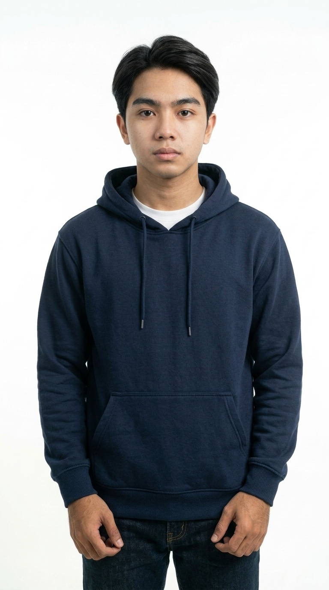

A little website, just for you 💌
Untuk kamu,
orang favoritku. ❤️
Aku bikin halaman kecil ini supaya beberapa kenangan kita punya tempat sendiri di internet.
Lihat cerita kita ↓OUR LITTLE STORY
Beberapa hal yang ingin aku simpan.
Kenangan #01
Hari ketika semuanya terasa spesial.
Ganti tulisan ini dengan cerita kalian: kapan pertama bertemu, pertama jalan bareng, atau momen favoritmu bersamanya.

Kenangan #02
Foto yang selalu bikin senyum.
Kamu bisa mengganti paragraf ini dengan inside joke, ucapan terima kasih, atau pesan singkat untuk pasanganmu.
OUR GALLERY
Tiga foto, seribu kenangan.
A LITTLE VIDEO
Putar saat kamu sedang kangen.
Ganti assets/video.mp4 dengan video kalian.
ONE IMPORTANT QUESTION
Masih sayang aku? 🥺
Jawab jujur ya. Jangan lihat tombol lainnya dulu. 😌